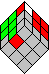
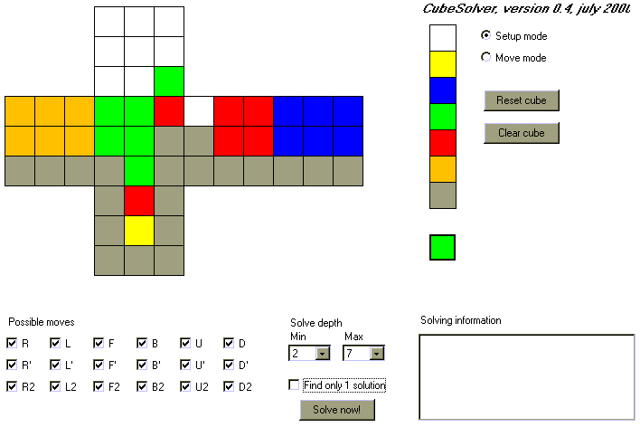

Explanation
Version
This is version 0.94 of my CubeSolver applet. I built it using Visual Café 4.1a.
THIS IS STILL A DEBUG VERSION.
DO NOT TRUST THE RESULTS WHEN YOU COMBINE THE PRUNE TABLES WITH THE OPTION 'IGNORE CUBIES'. You could miss algorithms.
The Possible moves option works fine with prune tables.
Features
Using this applet you are able to:
- Play with the cube (Left mouse button).
- Setup a position of the cube (Right mouse button).
- Find the shortest algorithm(s) to solve a position of the cube.
Playing with the cube
You can move all sides and slices of the cube by clicking on a cubie with the left mouse button, keeping the mouse button down, and releasing the mouse button on a neighboring cubie.
You cannot rotate the cube. Use the sticker mode applet if you need rotation and slice moves.
After scrambling the cube, the moves are counted. After the first move time starts running, and is shown after each move.
Setting up the cube
This applet is based upon block mode. This means that when you setup the cube, you can change the orientation and position of each individual
cubie, but not of each individual sticker on the cube. This makes it easy to set up the cube.
You can change the orientation of a cubie by right clicking on it.
You can change the position of a cubie by dragging the cubie with the right mouse button to the wanted position.
You can ignore a cubie by keeping down CTRL while right clicking on it.
You can ignore the orientation of a cubie by keeping down ALT while right clicking on it.
I will soon add a description of what the prune tables are all about. The prune tables make solving at least a factor 10,000 faster.
Solving a position of the cube
By setting up the cubies or moving the sides and slices of the cube you can build a position that you want to be solved. If you do not care about certain stickers, you can set their color to gray.
Next you can tell CubeSolver which moves are allowed to solve the cube, using the options in the bottom of the applet. The fewer possible moves, the sooner CubeSolver will be finished. This feature might also be handy in the following situations:
- You want to find a solution of Rubik's Domino. With Rubik's Domino it is not possible to use quarter turns for the L, R, F and B sides.
- You want to find a solution for the Two Generator family. Two Generator family means scrambling and solving the cube using only moves on two sides (f.i. only R and U turns).
Next tell CubeSolver whether it must stop after finding one solution, or it can continue checking all possible moves.
Finally you can tell CubeSolver how deep it must look for solutions. The deeper it looks, the longer it takes. Remember that Rubik's Cube has an enormous number of possible positions: 4.3 * 10^19 positions. If you were able to check 10 million positions per second , it would still take 4.3 * 10^12 seconds (136 thousand years!) to reach all possible positions.
The current version of CubeSolver is able to check all moves at a depth of 9 within 4 hours. So forget about it if you want to find a solution at depth 12 or so.
Example of solving
Suppose you want to find the shortest algorithm for the situation below. It is one of the situations for building two layers. In this case you do not care about what happens to the last layer.

If you already know an algorithm of seven moves for this situation, setup CubeSolver like this:

Within two minutes CubeSolver will find all solutions with a maximum of seven moves. In this case it will even find three solutions of six moves.
Good luck!
Last update: April 20, 2001.